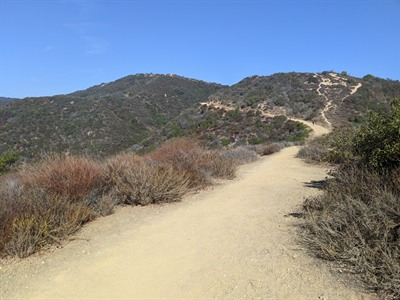
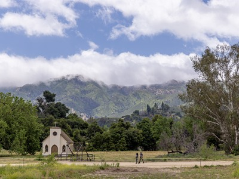
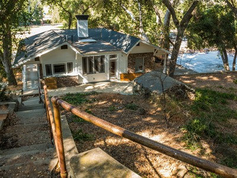
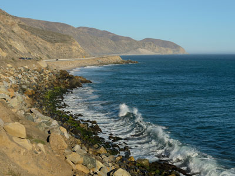
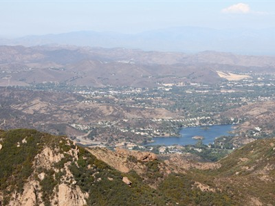
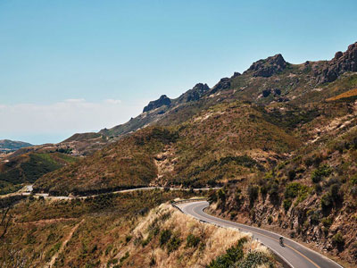

National recreation area containing many individual parks and open space preserves, located primarily in the Santa Monica Mountains of Southern California
General Information
Most parking lots: Open daily from 8:00 AM to sunset
No entrance pass required for National Park Service sites
Fees may apply for camping and special use permits
Must stay on trails, roads, and developed areas
Not allowed in buildings or posted restricted zones
Owners must clean up after pets and never leave them unattended
Beaches: Best in summer, lowest visitation in winter
Year-round access with mild Mediterranean climate
How to Get There
From Los Angeles (35 mi): Take US-101 N to Las Virgenes Rd in Calabasas, then turn left onto Mulholland Hwy and follow signs to Santa Monica Mountains National Recreation Area.
Overview
The Santa Monica Mountains National Recreation Area is a unit of the National Park Service, established in 1978 and often described as the world’s largest urban national park. It is a patchwork of federal, state, county and private lands, a mosaic of rugged mountains, oak-studded valleys, chaparral and dramatic Pacific coastline stretching from Los Angeles into Ventura County. The area protects one of the best examples of a Mediterranean-climate ecosystem in the world and one of the highest concentrations of archaeological sites of any mountain range, including Chumash and Tongva sites, historic ranches and film locations that have long served as backdrops for Hollywood productions. Landmarks include Paramount Ranch and Malibu Creek State Park, while Point Mugu State Park and Leo Carrillo State Park anchor the coast. Visitors come for hiking, cycling and horseback riding just minutes from the city, and the mountains are home to mountain lions, bobcats, coyotes and hundreds of bird species.
Access
The recreation area has no single entrance. Its trailheads, beaches and parks are spread across the mountains and coast, with about two-thirds of the land in Los Angeles County and one-third in Ventura County. Most visitors drive: US-101 and the Pacific Coast Highway (CA-1) frame the range, and the winding Mulholland Highway, opened in 1928, links many of the major parks and trailheads. From Los Angeles, Calabasas and the Anthony C. Beilenson Interagency Visitor Center at King Gillette Ranch are a good starting point. Public transit is limited, parking at popular trailheads can fill on weekends, and several parks are managed by California State Parks, which charge their own day-use parking fees, so check the specific area you plan to visit.
Seasons
Spring is the most popular season, when the hills turn green and wildflowers bloom along the trails. Summer is hot and dry in the mountains, so hikes are best done early in the morning, while the beaches are at their busiest. Fall brings cooler hiking weather but also dry conditions and Santa Ana winds, and wildfire is a real concern in the Santa Monica Mountains, so fire closures can affect trails and parking areas at any time of year. Winter is mild with occasional storms, which bring flowing creeks and waterfalls but can close roads and trails because of flooding or landslides. Check the National Park Service website for current alerts before you go.
Things to Do
Hike and Explore the Backcountry
Hundreds of miles of trails cross the mountains, from easy canyon walks to long ridge routes such as the 65-mile Backbone Trail. Mountain biking and horseback riding are also popular on designated trails.
Visit State Parks and Beaches
The recreation area includes Malibu Creek, Topanga, Point Mugu and Leo Carrillo State Parks, along with beaches, tide pools and sea caves along the Pacific coast.
Discover Film and Ranch History
Sites such as Paramount Ranch and Peter Strauss Ranch recall the area’s history as ranch country and a long-time Hollywood film location.
Learn About Chumash and Tongva Heritage
The Satwiwa Native American Indian Culture Center in Newbury Park is dedicated to the area’s Native American cultures, and the mountains hold many archaeological and rock art sites.
Top Trails
Solstice Canyon Trail
Length: 2.1 miles round trip
Elevation Gain: Gentle, gradual climb
Difficulty: Easy
This popular trail follows a creek through oak and sycamore woodland to a waterfall and the ruins of the Roberts Ranch house. Waterfall flow varies with rainfall.
Mishe Mokwa Trail to Split Rock
Length: 3.5 miles round trip
Elevation Gain: Varies
Difficulty: Moderate
Starting near Sandstone Peak, the highest peak in the Santa Monica Mountains, this trail passes rock formations and canyon scenery on its way to Split Rock. Longer loops continue toward Balance Rock and the summit.
Satwiwa Loop Trail
Length: 1.5 miles round trip
Elevation Gain: Varies
Difficulty: Easy
This short loop in the Rancho Sierra Vista/Satwiwa area begins near the Satwiwa Native American Indian Culture Center and offers a gentle introduction to the area’s grasslands and views.
Backbone Trail
Length: 65 miles one way
Elevation Gain: Varies
Difficulty: Strenuous
The Backbone Trail follows the spine of the Santa Monica Mountains for 65 miles. Most hikers tackle it in sections.
Visitor Centers
The Anthony C. Beilenson Interagency Visitor Center at King Gillette Ranch in Calabasas is the main information stop, with exhibits, maps and staff who can help plan a visit. It is typically open Wednesday through Sunday from 9:00 AM to 4:00 PM, but hours can change, so confirm before you go. The Satwiwa Native American Indian Culture Center in Newbury Park, on the western side of the range, focuses on Native American cultures and is open on weekends.
Camping and Lodging
Camping is mostly in the state parks within the recreation area. Leo Carrillo State Park, Point Mugu State Park and Malibu Creek State Park have family campgrounds that are reserved through ReserveCalifornia, and Topanga State Park has a small backcountry hike-in camp. For hotels and other lodging, the closest bases are Calabasas, Agoura Hills and Thousand Oaks on the inland side, and Malibu and Santa Monica along the coast. Most are within an hour or so of the trailheads, and the wider Los Angeles area offers many more options.
This article uses material from the Wikipedia articles "Santa Monica Mountains National Recreation Area", which are released under the Creative Commons Attribution-Share-Alike License 3.0. Additional information from the National Park Service.
Featured Locations

Leo Carrillo State Park
State park situated along the Malibu coast, with 1.5 miles of beach and stretches into the Santa Monica Mountains

bahniuk, CC BY 3.0, via Wikimedia Commons; Image Size Adjusted
Los Liones Canyon Trail
Scenic canyon trail climbing through coastal scrub and ridgelines to elevated viewpoints overlooking the ocean and surrounding mountains.

The original uploader was Geographer at English Wikipedia., CC BY 2.5, via Wikimedia Commons; Image Size Adjusted

Malibu Creek State Park
State park preserving the Malibu Creek canyon in the Santa Monica Mountains
The original uploader was Geographer at English Wikipedia., CC BY 2.5, via Wikimedia Commons; Image Size Adjusted
Newton Canyon Falls
Secluded seasonal waterfall nestled within a canyon landscape featuring shaded creek crossings, rocky terrain, and surrounding coastal mountain scenery.

The original uploader was Geographer at English Wikipedia., CC BY 2.5, via Wikimedia Commons; Image Size Adjusted
Paramount Ranch
Historic ranch property featuring open landscapes, scenic trails, and preserved Western-style structures surrounded by rolling hills and natural terrain.

The original uploader was Geographer at English Wikipedia., CC BY 2.5, via Wikimedia Commons; Image Size Adjusted
Peter Strauss Ranch
Historic parkland featuring shaded oak groves, open grassy areas, and peaceful walking trails set within a natural canyon setting.

The original uploader was Geographer at English Wikipedia., CC BY 2.5, via Wikimedia Commons; Image Size Adjusted
Point Dume
Promontory on the coast of Malibu, California that juts out into the Pacific Ocean. The point, a long bluff, forms the northern end of the Santa Monica Bay.

King of Hearts, CC BY-SA 3.0, via Wikimedia Commons; Image Size Adjusted

Point Mugu State Park
State park featuring rugged, nearly impassible shoreline giving way to tidal lagoons and coastal sand dunes, 5 miles of oceanfront beaches, palisades, mountains, two major canyons, and grassy valleys

King of Hearts, CC BY-SA 3.0, via Wikimedia Commons; Image Size Adjusted
Sandstone Peak
Highest volcanic summit in a coastal mountain range offering sweeping ocean vistas, rugged sandstone formations, and expansive ridge-top views.

Jordanamnebrink, CC BY-SA 4.0, via Wikimedia Commons; Image Size Adjusted

Topanga State Park
Park covering 11,000 acres, with thirty-six miles of trails and unimproved roads, stretching from Topanga Canyon to Pacific Palisades and Mullholland Drive and is the largest park in the Santa Monica Mountains